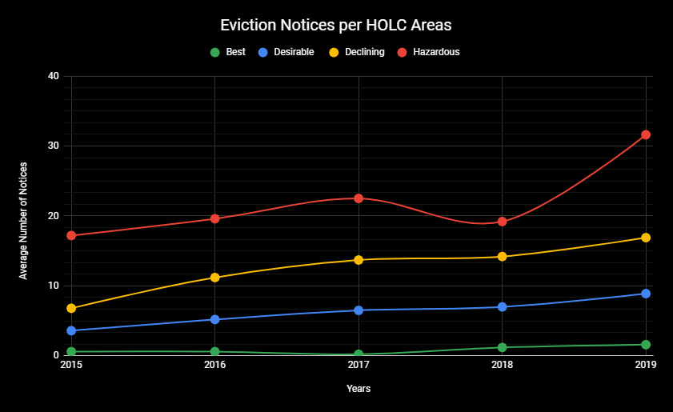
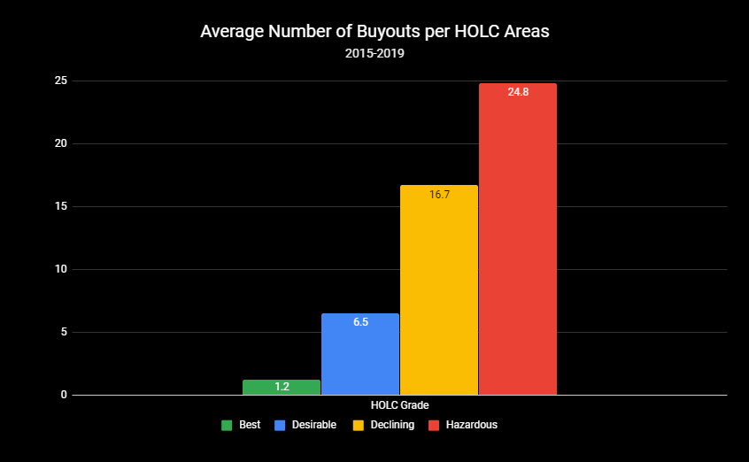

With recent conversation surrounding loan debt and affirmative action, it is important that we reflect on the actions from our past as a nation as we move towards the future. This wealth and race basis were taken into play when the Home Owners’ Loan Corporation classified neighborhoods desirability and acceptance for loans. The HOLC was born from the New Deal and promised to alleviate stress from the Great Depression. Neighborhoods were graded for protentional risk for default on a loan and desirability of the overall area. Although these other factors were included in their survey, the determination was heavily race based. Low graded areas had a high number of migrants and people of color. These areas were not eligible for the assistance programs that rolled out with the New Deal. Banks would deny loans based on the areas being risky. This “perpetuate systematic segregation of minority groups in the United States”. As a result, families have lost out on the generational wealth and real estate that have propelled many different neighborhoods across America for generations. Source
City Rising provides a background of the Home Owner’s Loan Corporation in California.
In San Francisco the story plays out similarly to how it has across big cities in the United States. The long term, persistent removal and control of how people of color exist in spaces. The Anti- Eviction Mapping Project’s zine Black Exodus shows the displacement and segregation through the eyes of community members and their experiences with housing, schooling, and their enviroment.
Removing residents from their homes can happen for several reasons, generally the most common is a lack of payment. However, the fault can be placed more on the structure of the housing authorities not defending long term residents in an area that is seeing a large influx of big money. As Phyllis Bowie explained signing a lease with Rent Control often not held. One of the main reasons for this in San Francisco is the Ellis Act. The Ellis Act gives landlords the unconditional right to evict all tenants to “go out of business.” This is often used to change the use of the building, such as converting to condos. Leaving thousands out of housing. The Anti Eviction Mapping Project shows the number of just Ellis Act evictions since its implementation. HOLC Grades are as follows:
The number of evictions for all reasons is higher in previously red lined areas. To account for the different number of HOLC areas in each grade an average was taken for each color grade. However not only do Red areas have the highest raw number of eviction notices at 2,044 since 2015, they also have one of the smaller number of areas assigned to them, at 17. The best grade, green, has 13 total areas and only 56 eviction notices since 2015.
Landlords can offer to buyout tenants from the lease, effectively an eviction notice. Buyouts speed up an eviction process, can prevent tenants from suing, and can restrict rights. Landlords often retaliate if tenants do not take buyouts. Often times those who take buyouts have to use the funds to relocate outside of the city leaving their home. Tenants do not have to accept the buyouts, but that still does not stop long term displacements.
Darker red areas have a higher number of buyouts than ligher colored areas.
From 2015-2019 the areas previously defined as ‘Green, Best’, have only had 16 buyouts out of the 1,192 total. On average previously ‘hazardous’ have had the highest number of buyouts buy a wide margin. This shows the persistent trend that neighborhoods formerly of color are being be repurposed to serve new communities that have an excess of wealth. Although buyouts may seem like a favorable solution, they only speak to the disregard for those communities.
The areas that have been hit hardest by gentrification are those previously ‘Red lined’ by the HOLC. People in these areas were denied many economic freedoms in the early 40s because of the government’s decision to segregate communities racially and financially. What we see is that those areas, because of a loss in generationally wealth, are unable to defend their communities from slumlords and big tech buy outs. This is a trend across the United States, residents are being forced out and displaced. Or have seen the persistence of a continually underserved community.